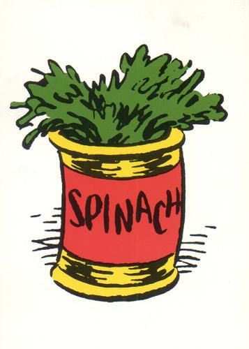

Steak with Spinach
Don't be high on only protein. Remember to have some healthy but powerful spinach with beef. It's worth having together.

Go Green
Want to have strength and muscles like Popeye? Make a habit of daily having this spinach only adding some salt & pepper as seasonings.

Spinach Pasta
What is better than having a pasta with spinach? I assure you this spinach can give you that amount of energy which some meat can't.